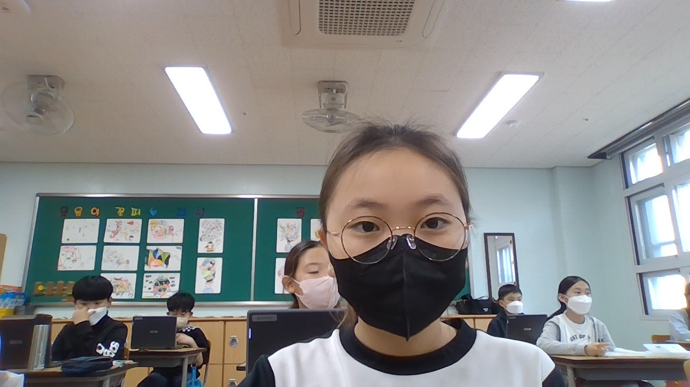

<h2>제목:오빠랑 <i>운동</i> 했던 일</h2><br/><br/>
<b>저녁 9시에</b> 둘째 오빠와 줄넘기와 공놀이를 하러 나갔다.<br/>
저녁에 나간적이 거의 없어서 9시에 밖에 나가니 뭔가 무서웠다.<br/>
놀이터를 도착해 공놀이와 운동을 할 수 있는 곳에서 오빠와 즐겁게 운동을 했다.<br/>
땀을 흘리며 즐겁게 운동을하니 재미있었다.<br/>
운동이 끝난 후 편의점에 들어가 음료수와 간식을 사고,집에서 간식을 먹으며 놀았다.<br/>
밤에 오빠와 같이 나와서 운동을 하고 간식을 먹으며 <i>오빠와 노니 재미있었다.</i><br>
